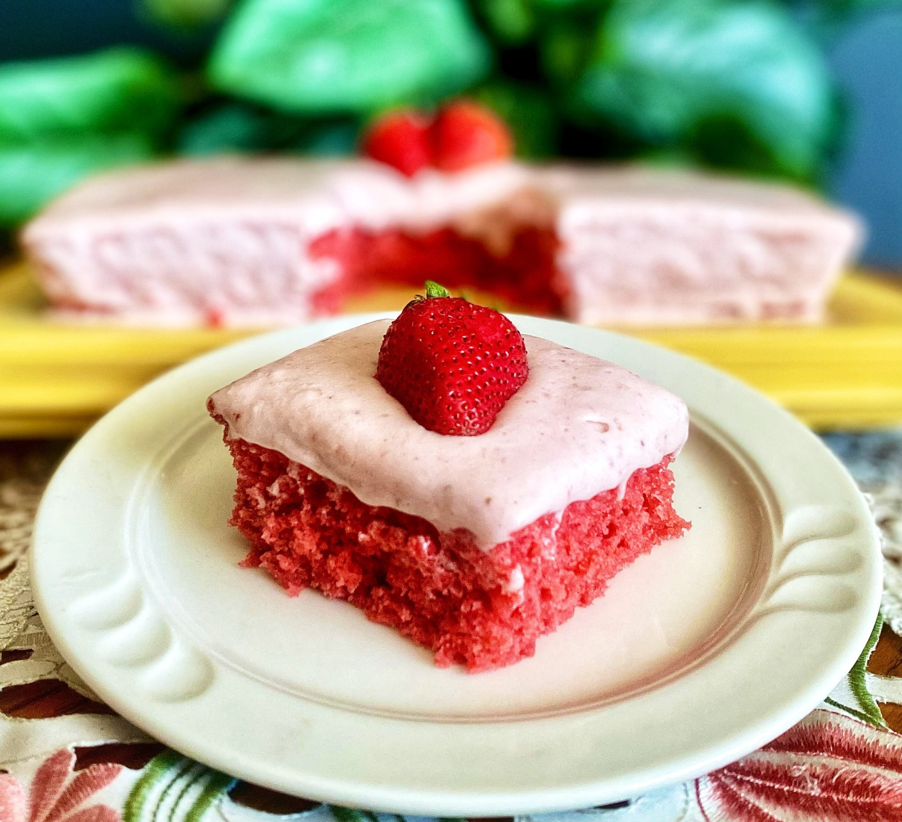

Recipes
Strawberry Sheet Cake

Description
A cake with strawberry puree and topped with fresh strawberries, whipped cream, or icecream.
Ingredients
- 1 (16 ounce) package fresh strawberries
- 1 (15.25 ounce) package white cake mix
- 3 large eggs
- 3/4 cup oil
- 1 (3 ounce) package strawberry-flavored gelatin (such as Jell-O®)
Strawberry Frosting:
- 1/4 cup butter, softened
- 1 (4 ounce) package cream cheese, softened
- 2 ½ cups powdered sugar, or more as needed
- 1 teaspoon vanilla extract
Steps
- Preheat the oven to 350 degrees F (175 degrees C). Grease a 9x13-inch sheet pan.
- Wash and hull strawberries. Puree strawberries in a blender. You should have 1 3/4 cups strawberry puree. Set aside 1/2 cup strawberry puree for the frosting.
- Combine cake mix, 1 1/4 cups strawberry puree, eggs, oil, and gelatin in a bowl. Beat using an electric mixer until thoroughly combined. Pour batter into the prepared sheet pan and smooth out the top.
- Bake in the preheated oven until a toothpick inserted into the center comes out clean, 35 to 45 minutes. Remove from oven and cool completely on a wire rack.
Strawberry Frosting:
- Combine butter and cream cheese in a bowl and beat with an electric mixer until smooth. Add 1/2 cup strawberry puree, powdered sugar, and vanilla extract, and beat until frosting is smooth.
- Frost cooled cake with strawberry frosting. Keep refrigerated until serving.